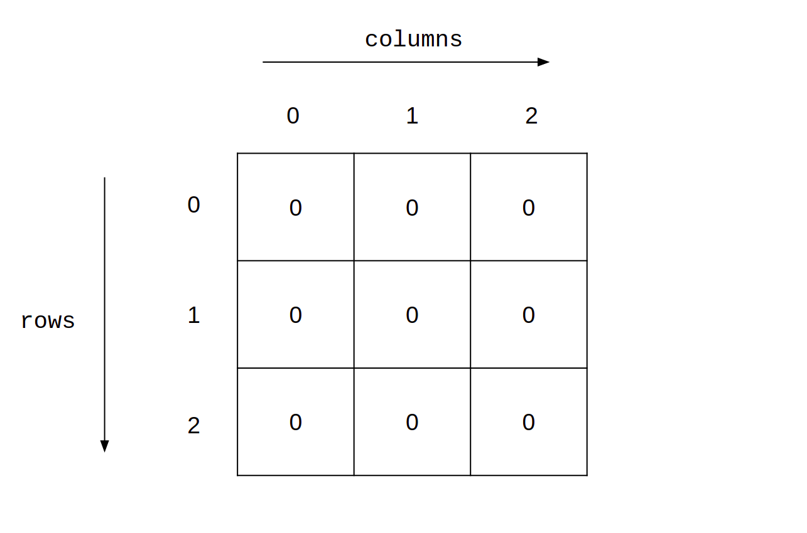
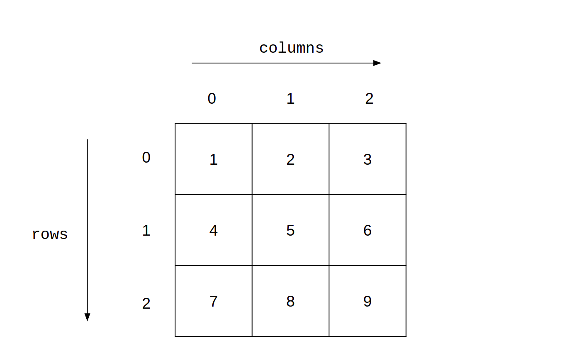
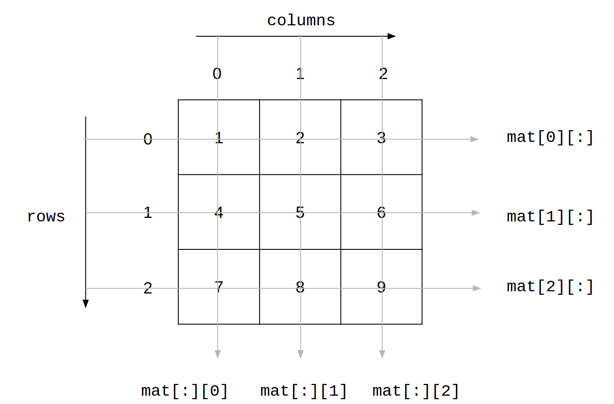

Recall the runs list that we generated with the help of the random library:
xxxxxxxxxx51import random2runs = random.choices([0, 1, 2, 3, 4, 5, 6], 3 weights = [30, 30, 20, 5, 10, 0, 5], 4 k = 120)5assert len(runs) == 120An assert statement is used whenever we wish to verify if some aspect of our code is working as intended. For example, in line-5 of the code given above, we are making sure that the length of the list is 120. This is a useful check to have as subsequent computation will depend upon this. If the conditional expression following the assert keyword is True, then control transfers to the next line. If it is False, the interpreter raises an AssertionError.
Let us look at a different way of organizing the information contained in runs:
xxxxxxxxxx71overs = list()2new_over = list()3for ball, run in enumerate(runs):4 new_over.append(run)5 if (ball + 1) % 6 == 0:6 overs.append(new_over)7 new_over = list()overs is a nested list, which is nothing but a list of lists. Each element in overs corresponds to an over in the match and is represented by a list that contains the runs scored in that over. The following code does a quick check if the sizes of the outer and inner lists are 20 and 6 respectively.
xxxxxxxxxx31assert len(overs) == 202for over in overs:3 assert len(over) == 6With this representation in place, how many runs were scored in the fourth ball of the third over?
xxxxxxxxxx21answer = overs[2][3] # zero-indexing2print(answer)The first index corresponds to the outer list while the second index corresponds to the inner list. If this is still confusing, print the following code to convince yourself:
xxxxxxxxxx51third_over = overs[2]2print(third_over)3fourth_ball = third_over[3]4print(fourth_ball)5assert fourth_ball == overs[2][3]
Matrices are 2D objects. We can represent them as nested lists. Let us first populate a matrix of zeros:

xxxxxxxxxx61mat = [ ]2for i in range(3):3 mat.append([ ]) # we are appending an empty list4 for _ in range(3):5 mat[i].append(0)6print(mat)This gives the following output:
xxxxxxxxxx11[[0, 0, 0], [0, 0, 0], [0, 0, 0]]
Do you find anything odd in line-4? We have used _ as a loop variable. The inner-loop variable is insignificant and never gets used anywhere. As a convention, we use the _ to represent such variables whose sole purpose is to uphold the syntax of the language. Coming back to the matrix, the following table will give some clarity as to the mapping between the matrix and the nested list:
| Matrix | List |
|---|---|
| First row | mat[0][:] |
| Second row | mat[1][:] |
| Third row | mat[2][:] |
| First column | mat[:][0] |
| Second column | mat[:][1] |
| Third column | mat[:][2] |
mat[:][0] represents a slice of the nested list. The first index corresponds to rows and the second index corresponds to the columns. In the slice mat[:][0], we are fixing the column, but allowing the rows to range from 0 to 2. Let us construct the following matrix to get a better idea of how slices work:

xxxxxxxxxx81mat = [ ]2num = 13for i in range(3):4 mat.append([ ])5 for _ in range(3):6 mat[i].append(num)7 num += 18print(mat)This gives the following output:
xxxxxxxxxx11[[1, 2, 3], [4, 5, 6], [7, 8, 9]]
Hopefully, the following picture will give you a clear idea of how slices work in nested lists:

The code given above to construct this matrix could be written in the following manner as well:
xxxxxxxxxx91mat = [ ]2num = 13for _ in range(3):4 row = [ ]5 for _ in range(3):6 row.append(num)7 num += 18 mat.append(row)9print(mat)
Consider the following code:
xxxxxxxxxx61mat1 = [[1, 2], [3, 4]]2mat2 = mat13mat2.append([5, 6])4print(mat1)5print(mat2)6print(mat1 is mat2)We already know what will happen here. Lists are mutable. mat2 is just an alias for mat1 and both point to the same object. Modifying any one of them will modify both. We also saw three different methods to copy lists so that modifying one doesn't modify the other. Let us try one of them:
xxxxxxxxxx51mat2 = mat1.copy()2mat2.append([5, 6])3print(mat1)4print(mat2)5print(mat1 is mat2)No problems so far. But try this:
xxxxxxxxxx51mat1 = [[1, 2], [3, 4]]2mat2 = mat1.copy()3mat2[0][0] = 1004print(mat1)5print(mat2)This is the output we get:
xxxxxxxxxx21[[100, 2], [3, 4]]2[[100, 2], [3, 4]]
What is happening here? mat1 has also changed! Wasn't copy supposed to get rid of this difficulty? We have a mutable object inside another mutable object. In such a case copy just does a shallow copy; only a new outer-list object is produced. This means that the inner lists in mat1 and mat2 are still the same objects:
xxxxxxxxxx21print(mat1[0] is mat2[0])2print(mat1[1] is mat2[1])Both lines print True. In order to make a copy where both the inner and outer lists are new objects, we turn to deepcopy:
xxxxxxxxxx61from copy import deepcopy2mat1 = [[1, 2], [3, 4]]3mat2 = deepcopy(mat1)4mat2[0][0] = 1005print(mat1)6print(mat2)This gives the output:
xxxxxxxxxx21[[1, 2], [3, 4]]2[[100, 2], [3, 4]]
Finally we have two completely different objects:
xxxxxxxxxx61from copy import deepcopy2mat1 = [[1, 2], [3, 4]]3mat2 = deepcopy(mat1)4print(mat1 is not mat2)5print(mat1[0] is not mat2[0])6print(mat1[1] is not mat2[1])All three print True! deepcopy is a function from the library copy. We won't enter into how it works. Suffice to say that when using nested lists or any collection of mutable objects, use deepcopy if you wish to make a clean copy.